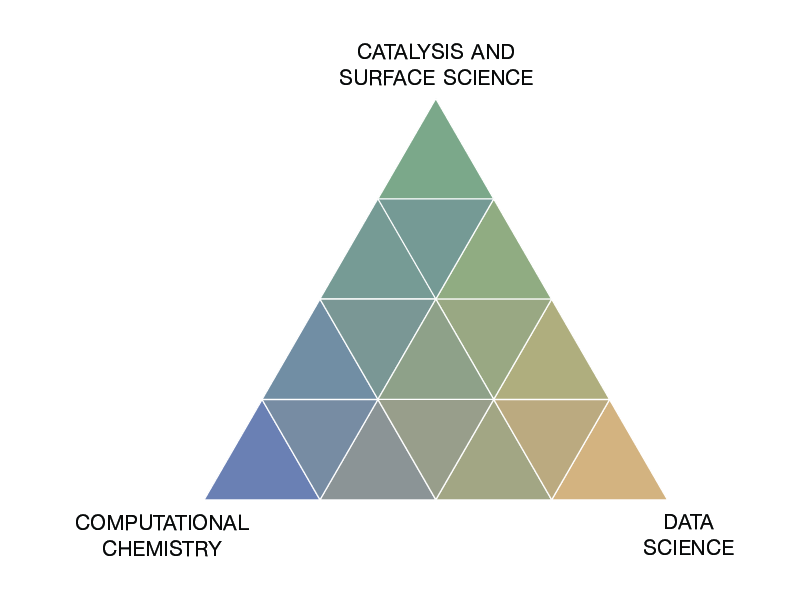
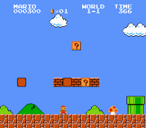
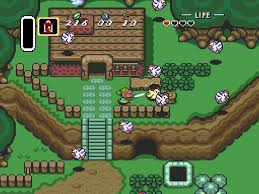

Big Data & Quantum Mechanics#
Overview of Medford Group research#

About Prof. AJ Medford#
Started as a professor (and this VIP course) in Spring 2017.
Experience in developing and contributing to several open-source software packages (CatMAP, ElectroLens, TAPSolver, SPARC, AMPTorch)
Instructor for “Data Analytics for Chemical Engineers” and Numerical Methods.
Interest in applying data science techniques to problems in quantum chemistry and physics.
Introductions#
We will go around the class and introduce ourselves to the everyone. When it is your turn to speak, tell everyone your preferred name, major, and something boring about yourself.
How does VIP work?#
The premise of VIP is teams working on projects. Much like a real-world engineering team, individual members work on different aspects of the project. Team members range from sophomores through graduate students, from first-time participants to students who have been involved for four or more semesters. Some students take the course for one credit, and others take it for two credits; naturally, the bar will be higher for those taking it for two credits.
Disclaimer: There have been substantial changes since Spring 22, so some inconsistencies are to be expected.
How is VIP graded?#
You will receive a grade for the course based on three criteria:
Documentation (33.3%): Based on biweekly updates of progress on tasks.
Personal Accomplishments (33.3%): Based on how well you achieve your research goals.
Teamwork and Participation (33.3%): Peer evaluations will be used to establish how well you work on a team.
Grading process:
Bi-weekly on Thursday: Submit “bi-weekly update” and literature review to Canvas. Complete peer grading (instructions in syllabus).
Midterm: Submit personal accomplishment documentation to Canvas. Complete peer evaluations. Complete peer grading. Note for returning students This grade will be counted towards your final grade in the course.
Final: Identical to midterm. Final grade will be a weighted average of the midterm and final submissions.
The following deliverables are expected at the midterm and final evaluations. Note that the “personal accomplishment” documentation will be graded using a combination of peer grading and instructor grading, so you will also need to complete the peer grading at each point.
Deliverables:
Compiled bi-weekly update
Personal accomplishment documentation
Peer grading
Peer evaluation
Demonstrated completion of all assigned training materials
See syllabus for more details.
VIP is not like a regular course#
Regular courses have a clear direction:

VIP lets you choose your own adventure:

Group Communication:#
Slack group used for all communication, join using this link
training: discussion related to training project.
general: channel for general discussions with the whole group.
Team Structure : New Students#
Complete training materials. Consists of introductions to computational tools, density functional theory, and machine learning concepts.
New students will join the “Training” sub-team. You will work individually to complete all the tasks, but should meet regularly with your teammates and graduate advisor to touch base on progress, ask questions, and get help with anything you are stuck on. The training materials should be completed shortly after the midterm. After this point, you will be expected to participate in the project specific sub-teams. You are free to join one of the sub-teams directly, or “sample” the available teams each week, but keep in mind that the expectation is that you join just one team by the end of the semester and begin working on a specific project.
Team Structure: Returning Students, OMSCS Students, post Training New Students#
Returning students will join one of the “sub-teams” described below, or work on “independent study” projects.
OMSCS students can decide whether to complete the training exercises or join a sub-team (or both)
New students will be expected to join one of the sub-teams after the midterm
Sub-teams#
There are several sub-teams, each of which will function as a small research group advised by a graduate mentor
DFT Modeling of Surface Reactions - This sub-team will focus on the computational investigation of surface reactions using SPARC DFT code, as well as testing and improving the SPARC code suite.
Machine Learning for Catalysis - This team will focus on developing ML tools for catalysis. The two main thrusts will be LLMs for catalysis and developing a lightweight, and easily customizable NNFF training package.
Machine Learning for Electronic Structure - This team will focus on developing ML tools for studyin electronic structure data.
Students should work on self-defined individual tasks within the scope of a sub-team
Each student should have a clearly-defined task that they are working independently on. This task should be self-determined and within the scope of the broader goal of the sub-team based on consultations with other sub-team members and the graduate student advisor.
Students may work together on a given task or direction, but should also have individual goals.
Students should regularly communicate with their sub-team to (1) coordinate progress on individual tasks to work toward the larger goal of the team, (2) ask for and provide assistance to other sub-team members, and (3) seek advice from and provide updates to the sub-team graduate mentor.
It is fully expected that the goals of research tasks change throughout the semester. The goals document can be updated at any time up to 2 weeks prior to the end of the semester. Students should revise goals as needed to ensure they are achievable.
Note that the achievements grade is determined by your sub-team advisor. Different advisors may have different expectations and organizational standards. You should be sure to clearly communicate with your subteam advisor to be sure that you are meeting their expectations.
Independent Study Projects#
These projects are self-defined projects that are outside the scope of the main sub-teams, but are within the scope of the Medford research group. These projects should be defined through direct discussions with Prof. Medford at least one month prior to the start of the semester. The projects will generally be associated with initiating new research projects or wrapping up ongoing projects from prior semesters. Independent study projects are typically high risk and/or require significant prior experience, so they will generally be reserved for more senior and returning students. Students from previous semesters who were part of a sub-team that no longer exists may continue their work as an independent study project as well, provided they have significant momentum from the prior semester (one month prior discussion not necessary). Returning students without a clear direction from prior semesters are strongly encouraged to join one of the main subteams.
Details on Sub-teams#
Additional details and broader context for the overarching goals of each sub-team, along with possible ideas of individual tasks, are provided below.
DFT Modeling of Surface Reactions#
Density functional theory (DFT) is one of the most popular computational approaches used in various fields due to its high accuracy in simulating atomistic models. In this project, we will go beyond the scope of the training materials and apply DFT to study fascinating surface reactions. While prior knowledge of these topics is not required, an interest in the computational investigation of chemical reactions is necessary, as the project will involve greater complexity in both DFT and chemistry. DFT calculations will be conducted using SPARC code. The SPARC DFT code, developed by Prof. Suryanarayana at Georgia Tech, was designed to be used for the massive parallel calculations. Additionally, the project will encompass testing SPARC code and improving the Python API for the code.
Investigating surface reactions#
DFT is a powerful tool for predicting what is going to happen in the system of interest. However, its reliability depends on how the calculations is done. This approach will involve:
Setting up the realistic surface models, which are crucial for obtaining accurate results
Predicting the surface reactions that are likely to occur under actual conditions
Analyzing the calculation results using Python
Utilizing SPARC DFT code#
The SPARC code is a newly developed DFT packages, and as such, it offers opportunities for further refinement through our contribution. The tasks will include:
Testing new features in SPARC
Enhancing the Python API for SPARC
Machine Learning for Catalysis#
Heterogenous catalysis is the staple of the modern chemical industry. However, many of the catalysts in use today were discovered decades ago. Computational tools, such as DFT, offer a promising route to rational design of novel catalysts with enhanced properties. The cost of DFT limits the search space that can be stuided computationally. Further, the methods for screening catalysts based on DFT calculations often rely on certain assumptions, including an active site(s), orientation of molecule, neglecting adsorbate-adsorbate interactions, approximations to thermal corrections etc… These limit the accuracy and applicability of DFT studies. ML methods have emerged as a promising complement to traditional DFT calculations. The SOTA models developed by Meta for predicting energies and forces can acclerate DFT screenings by as much as 2000x. These results can be used to identify promising candidate catalyst materials given the assumptions enumerated above. We hypothesize that LLMs fine-tuned on the catalysis literature and expert knowledge can be used to automate and improve the robustness of computational screening procedures by extracting knowledge from the wealth of scientific literature. This is a largely unexplored area, as LLMs have only recently been applied to solving problems in chemistry.
Fine-tuning GPT models for Catalysis#
LLMs are transforming how scinece is done. We aim to harness the power of open-access models trained by Meta (or others) to solve problems in the field of catalysis. Specific tasks for students will include:
Learning to interact with LLMs via APIs
Developing infrastructure for fine-tuning GPTs with computational catalysis literature on PACE
Construction of development environment for rapid iteration
Developing a portable and easily customizable platform for training NNs#
The machine learning literature evolves at a blistering rate. As a result, it is imperative to have a platform for implementing and testing SOTA methods rapidly. Existing platforms for training NNFFs tend to be clunky, involving “bleeding” edge dependencies that often break and result in headaches in installation. Further, efforts to optimize the training procedures result in code that is difficult to modify or customize. The goal here is to develop a lightweight, portable platform for training NNs on chemistry data. Specific tasks will include:
Utilizing an autograd package as a base for a NN training package
Developing highly modular python code with minimal dependencies and an emphasis on readability and portability
Extending NN training procedure to tasks outside of traditonal force field development (i.e., exchange correlations)
Machine Learning for Electronic Structure#
Machine Learning for Electronic Structure (led by Jagriti Sahoo): This project focuses on crafting machine learning models to establish a framework to correct the DFT energies to that calculated at a higher level of theory (any wave-function method) using electron density fingerprints. We will leverage the fingerprinting scheme developed in previous research from our group that uses Maxwell-Cartesian Spherical Harmonics (MCSH) to project the electron density onto a basis for representation. This project involves improving the descriptor calculation scheme in SPARC, understanding and running DFT calculations to generate electronic structure data, and analyze them using supervised and unsupervised ML methods. The students will gain hands on experience in python and parallel programming in C, using supercomputing resources as well as emerging ML methods. I am looking for students who have prior experience in C programming and a curiousity in emerging ML methods in computational chemistry is strongly encouraged.
Standard meeting format#
Subsequent meetings will follow one of three formats. We will start each meeting virtually in this Zoom room regardless of the format.
Lecture meetings: The main lecture will be used to briefly discuss logistics before breaking into sub-groups. All training students should plan on attending the training breakout session for a lecture on the topic of the week, while other subgroups will attend their own breakout rooms. Sub-groups where all (or some) of the students are on campus may elect to meet in person or in a hybrid mode based on the preference of group members.
Update meetings: For midterm and final updates, each team will post a 10-15 minute update presentation to Canvas, and each student will be assigned 3 update presentations to watch and provide peer reviews before class. During the class time, all students are expected to be present, and we will go through each group to field questions and discuss their work. Any remaining time will be used for sub-group meetings.
Workshops: No official lecture topic. The entire lecture will be used as unstructured time to work on projects and interact with mentors and instructors. Training students should use this as an opportunity to join the breakout room of the subteams they are most interested in joining.
Note: If no member of your sub-team is present for the synchronous lecture, then everyone from the group will lose 1/2 point (out of 5) from the teamwork grade. If you cannot attend please coordinate with your group and confirm with an instructor at least 24 hours ahead of time if nobody from your group will be there.
Lecture schedule and syllabus#
The course syllabus is available within this book, and includes a list of all the lecture topics and dates.
Week 1 Assignment#
Join the Slack channel
Start discussion for selecting your group or sub-team project
Install necessary software following instructions below.
Software Installation:#
Install Anaconda3#
We’ll be using Python3 and Jupyter notebooks extenstively in this class. To access this easily, we’ll need to install anaconda3. To do that, go to the anaconda website below and simply follow the buttons to download and install it (ensure that you’re downloading the correct version for your operating system.)
Ensure you can access a linux/unix prompt#
Windows users:#
Please install the windows ubuntu subsystem using these instructions:
Mac users:#
Be sure you can open a terminal